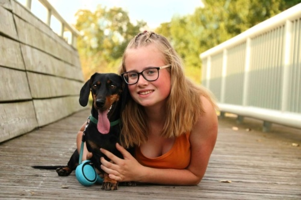
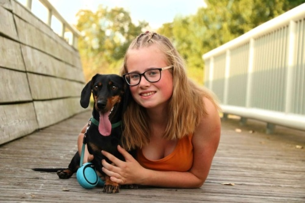

PRACOVNÍ ZKUŠENOSTI
Fotografováním se zabývám již několik let.
Moje kariéra začala již na střední škole, kde jsem na praxích
dělala asistentku velmi známému českému fotografovi,
Josefu Cvrčkovi.
Od něj jsem také později absolvovala kurz Jak fotit a jak nastavit fotoaparát,
který je mimochodem nejlepším kurzem fotografování v celé ČR.
 

A CO FOTÍM?
Jsem spíše outdoorový typ fotografa,
ale snažím se vyjít vstříc každému, takže s fotografováním v ateliéru
nemám žádný problém.
Nejvíce jsem ovšem zaměřená na krajiny, makro snímky, či portréty 'pod širým nebem'.
Tyhle snímky se následně dají skvěle využít například jako podklady
pro webové stránky, či jako stylový prvek výzdoby
vašeho domova. Více uvidíte v galerii.


 
